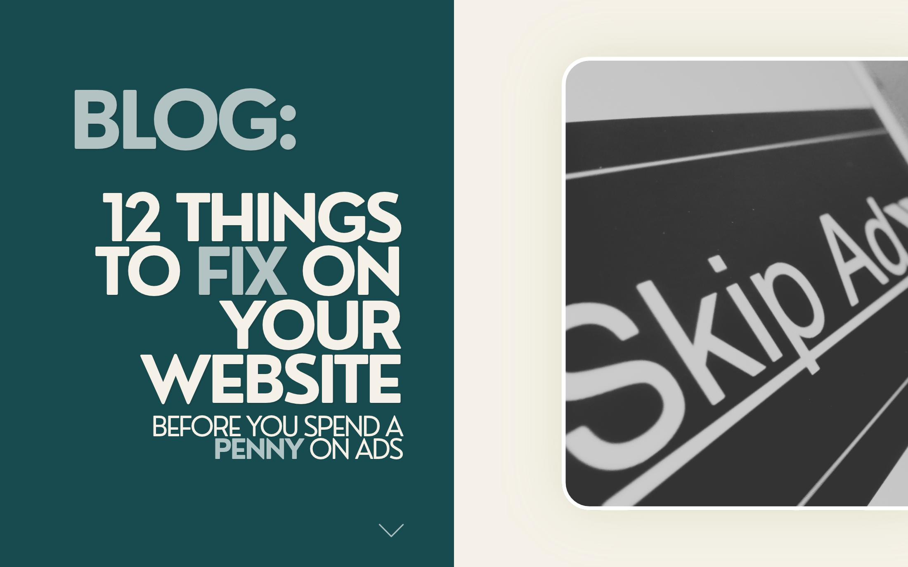

12 things to fix on your website before you spend a penny on ads

Ads on a shaky website are like printing beautiful flyers for a shop with a boarded-up door. You pay for every click either way, so it makes sense to spend an hour on these twelve fixes first. Most of them are free, and every one of them helps each future click work harder.
Screenshot this list, tick them off as you go, and when you are done you can put money behind your business knowing the website is ready to welcome it.
One note before we start: none of this needs a developer or a budget. It is the unglamorous housekeeping that separates websites quietly earning their keep from websites sitting there looking pretty.
The 12-point checklist
1. Your site loads slowly
If your homepage takes more than a couple of seconds on mobile, people are gone before they see a single word. The usual culprit is huge uncompressed photos straight off a phone camera, and the good news is it is one of the easiest wins on this whole list.
Quick check: run your homepage through PageSpeed Insights. Anything under 70 on mobile is worth a little attention.
The next culprit is clutter that has crept in over the years: pop-ups, chat widgets, five tracking tools all competing at once. Keep the tools you genuinely use and let the rest go.
2. It looks broken on a phone
Most of your visitors are on a phone, but most of us check our own website on a laptop. Text overlapping, buttons too small to tap, images spilling out of their boxes: all easily fixed and all worth fixing, because a comfortable phone visit keeps people exploring.
Quick check: open your site on your actual phone, not just a shrunk browser window, and scroll every main page.
3. There is no obvious next step
Every page can invite a small action: get a quote, book a call, say hello. When the next step is easy to spot, curious visitors become enquiries, and that feels good for everyone.
Quick check: on any page, ask "what am I meant to do here?" If the answer takes a moment to find, it will for your visitors too.
4. The navigation is confusing
Seven menu items, mystery labels, a homepage link that goes nowhere. A short, predictable menu, the same on every page, helps people relax and explore.
Quick check: five top-level items or fewer, with labels a first time visitor would guess, like "Services" rather than "What We Offer Businesses".
5. There is no proof you are good at what you do
Reviews, client names, real project photos, "as featured in" logos. People warm to other people far more readily than to our own carefully written copy, so let your happy clients do some of the talking.
It also helps to put proof where decisions happen: beside your prices, beside your contact form, on the pages people arrive on from Google. A testimonial page nobody visits is decoration, while proof in the right place is reassurance.
Quick check: does your homepage show at least one testimonial with a real name attached?
6. The content is out of date
A blog whose last post is two years old, a footer still saying 2022, team members who have moved on, prices you no longer charge. Freshening these up is quick, and it tells visitors you are here, active and paying attention.
Quick check: search your own site for last year's date, then fix whatever it finds.
7. It is all stock photos
Stock people in stock offices with stock handshakes. Real photos of your work, your space and you cost nothing but an afternoon, and they make your site feel like yours straight away.
Quick check: could a visitor recognise your business from your photos alone? If not, they are probably stock.
8. Finding your contact details is a puzzle
Buried contact pages, forms with eleven required fields, no email anywhere. Make it effortless: a friendly visible button, a real email, and as few fields as you can comfortably manage. People love an easy hello.
Quick check: from your homepage, count the taps until someone could send you a message. Three or more? Shorten the journey.
9. The branding changes from page to page
Three shades of teal, two different fonts, buttons that are round here and square there. Consistency is what helps a small business feel established, and it is one of the most affordable upgrades there is.
It matters more than it sounds. Visitors rarely notice inconsistent branding consciously, but they feel it, the same way you would feel unease dealing with a company whose invoice looks nothing like its website.
Quick check: screenshot your homepage, services page and contact page. Side by side, do they feel like the same business?
10. No padlock (no HTTPS)
Browsers show a small warning on non-secure sites, and visitors take the hint. It is a free fix in almost every case, and once it is done you never have to think about it again.
Quick check: does your address bar start https://? If not, make this today's quick win.
11. The 5-second test fails
Show your homepage to someone for five seconds, then ask what you do and who for. If they cannot answer, your headline is being clever instead of clear, and clear almost always converts better.
Quick check: try it with a friend. Their answer tells you exactly what your homepage is saying.
12. Broken links and dead ends
Links to pages that no longer exist, social icons pointing to abandoned accounts, images that never load. Tidying these up keeps every visit smooth and gives search engines a nice well-kept site to explore too.
Quick check: click every link in your menu and footer once a month. It takes ten minutes.
Fix these first
Here is the honest truth most agencies will not tell you: ads amplify whatever your website already does. Send paid traffic to a fast, clear, welcoming site and every pound works harder. That is why this hour before the ads is such a good investment.
If you only do five, do these, because they do the most work for the least effort:
- Speed (fix 1): everything else is worth more once the site loads
- Mobile (fix 2): that is where your visitors actually are
- One clear next step (fix 3): turn visits into enquiries
- Proof (fix 5): reviews and real work on the homepage
- The 5-second test (fix 11): clarity before cleverness
Sorted those and still not quite converting? The website itself might be the ceiling, and that is exactly the kind of thing we rebuild every week: websites designed around your business from £495, branding that helps you look the part, and print and social design that keeps it all consistent. Have a look at our services or get a free quote and we will tell you honestly where your site stands.
Then enjoy spending on ads.